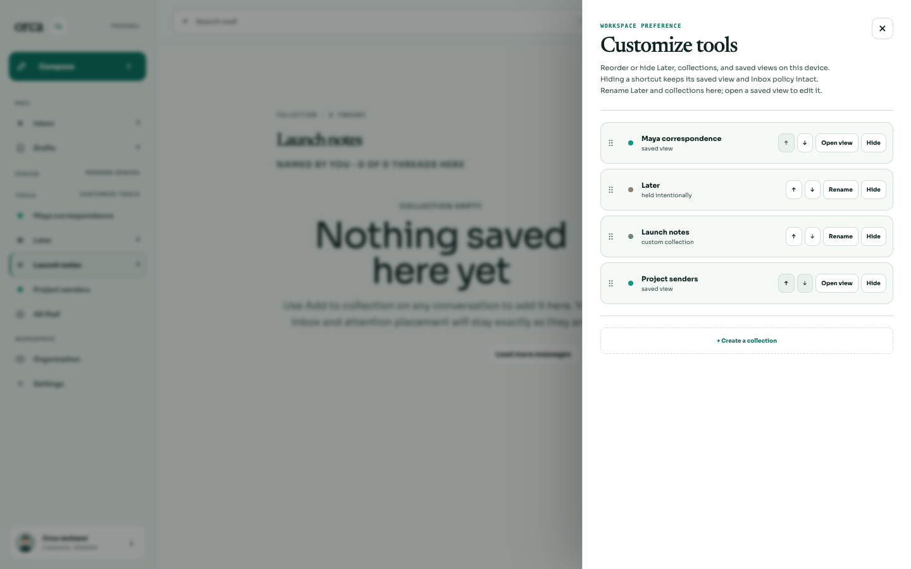
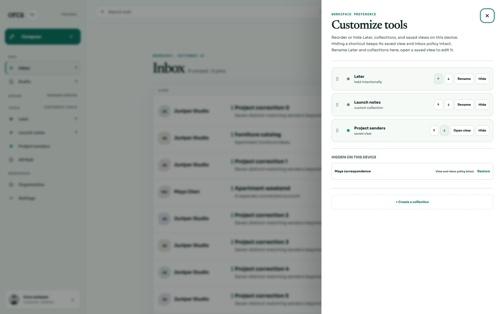
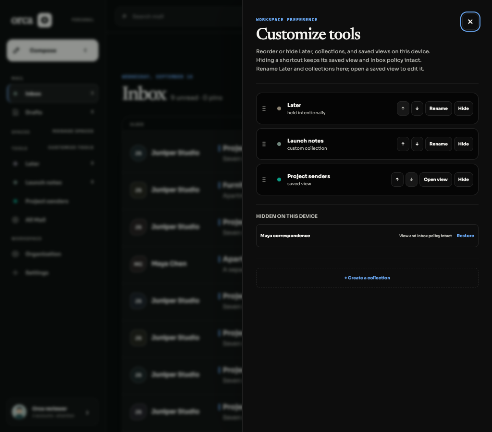
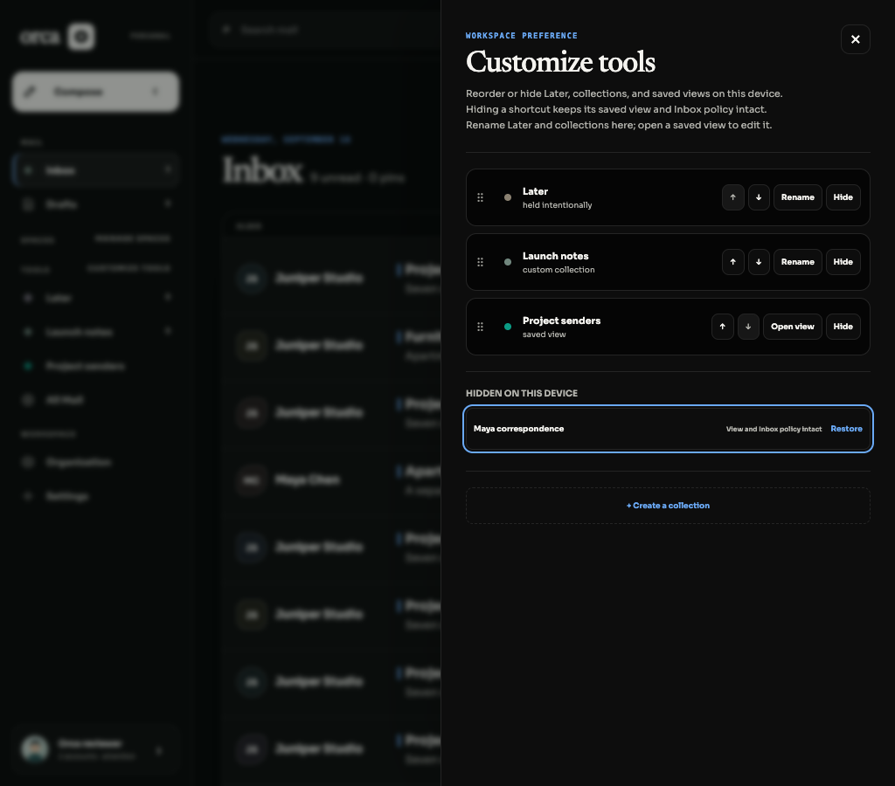
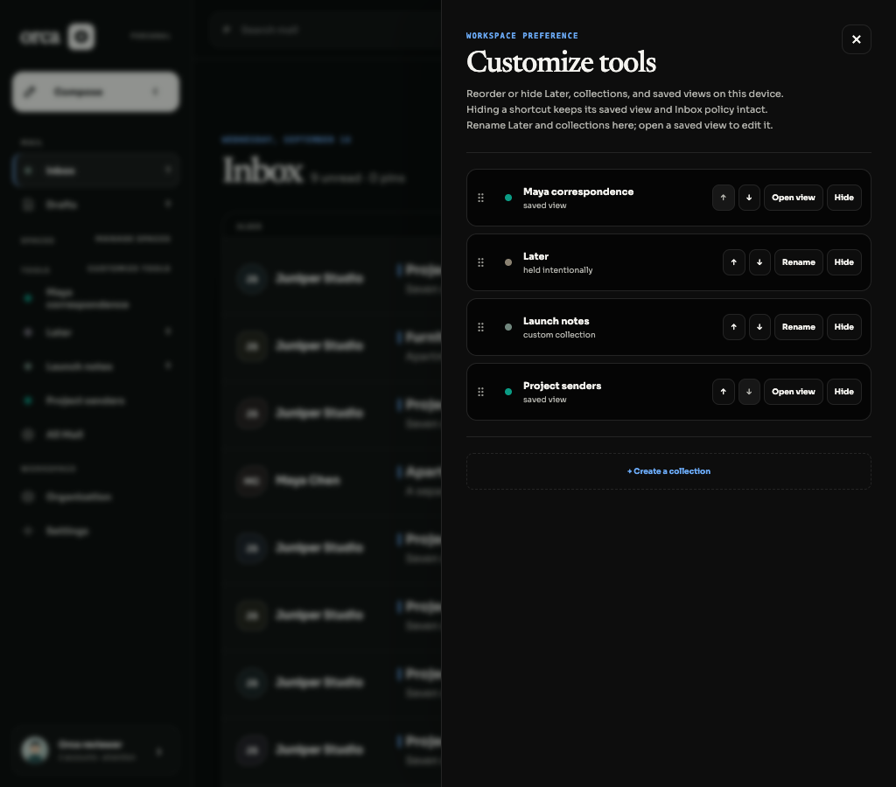
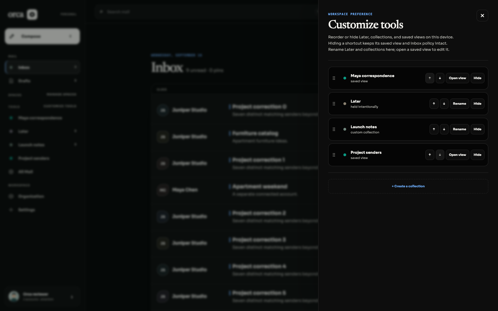
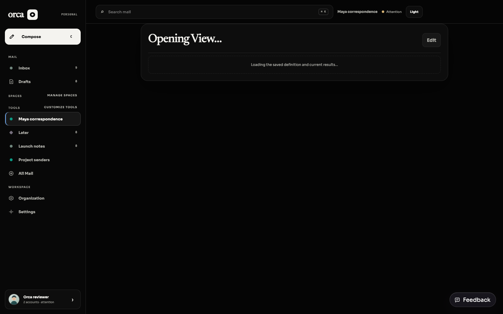
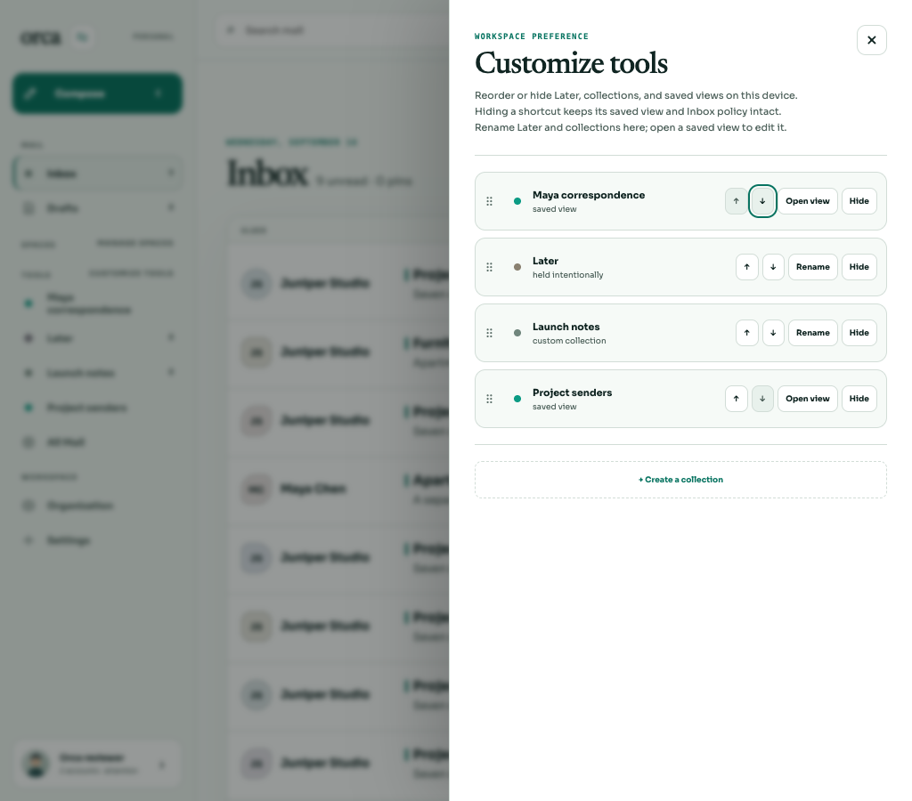

BRE-406 · Review evidence · 16 September 2026Saved sender views belong in Customize tools
Saved views now share device ordering and Hide/Restore with Later and collections. Hiding removes only the sidebar shortcut. Open view leads to the existing authorized editing surface.
Verified behavior
- Created two real sender views through prepare → preview → commit against disposable SQLite: Maya correspondence (skip Inbox), Project senders (keep in Inbox).
- Created Launch notes in the UI and reordered tools to Maya → Later → Launch notes → Project. Reload retained that order despite asynchronous collection/view hydration.
- Opened Maya, then hid it in Customize tools. Navigation safely changed to
?destination=inbox. - Reload retained the hidden shortcut and exposed Restore. Restore recovered the first position, and another reload retained it.
- Settings sidebar shared the order. Settings → Customize tools opened the same drawer and passed an explicit final order assertion.
- Light/Black at 1440px and 1024px retain labels, disabled arrow cues, hover and keyboard focus treatment. Existing styles were preserved.
SQLite proof: all 66 compared tables unchanged after Hide/Restore and reload (sessions and appearance preferences excluded). Saved view definitions, revisions, skipInbox values, routing, mail and provider records remained intact. Final browser assertion.
Regression checks
The new ordering regression failed before the fix: the saved view was appended instead of honoring its first position. After the fix:
bun test apps/web/src/navigation.test.ts — 8 pass, including unresolved IDs, mixed ordering, hide/restore, persistence, new and absent views.bun test apps/web/src/desktop-switch.interaction.test.tsx --test-name-pattern 'Customize tools' — 1 pass, no remote requests, no saved-view rename.bun test apps/web/src/desktop-switch.test.ts — 7 pass; existing CSS scan hit its 10s timeout. Focused rerun with --test-name-pattern 'bounds Inbox heading' --timeout 30000 passed (6.1s).
Source checkpoint: 5da9f21. Parent integration owns full CI and the test-mock typing adjustment. Browser used named headless agent-browser against Vite and a scratch API, never a real mailbox.
Visual evidence

Mixed tool order · Light · 1440px
Active view hidden → Inbox · Light
Hidden state after reload · Black · 1024px
Restore keyboard focus · Black
Restored at original position · Black
Restored tools · Black · 1440px
Restored view selected in sidebar
Settings → Customize tools · Light · 1024px